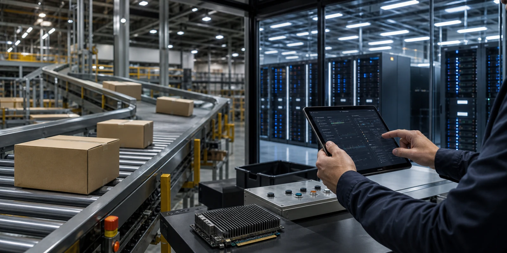

아마존은 클라우드와 리테일 복합 기업로 분류되지만, 지금 시장이 묻는 질문은 이름값 하나로 끝나지 않습니다. 아마존 주식은 AWS의 AI 인프라 성장, Trainium과 Bedrock 수요, 광고 사업, 리테일 비용 효율이 함께 이익률을 끌어올리는지 확인해야 합니다. 거래대금이 몰릴 때는 가격 반응보다 어떤 정보가 새로 들어왔고 어떤 기대가 이미 반영되어 있었는지를 먼저 나누어야 합니다.
이 주제는 추천보다 검증 기준이 중요하므로 아마존을 읽는 순서를 정리합니다. 이 글은 수익률을 약속하지 않으며, 회사와 네트워크가 실제로 증명해야 할 숫자와 남아 있는 부담을 독자가 직접 점검할 수 있도록 돕는 정보형 분석입니다.
AWS는 다시 가속할까

핵심은 AI 학습과 추론 수요가 AWS 성장률과 마진을 다시 끌어올리는지입니다. 아마존에 대한 시장의 기대는 이 장면이 단순한 뉴스가 아니라 반복 가능한 매출, 사용량, 비용 절감, 혹은 신뢰 회복으로 이어질 때 더 오래 유지됩니다. 같은 headline이라도 일회성 이벤트인지 구조 변화인지에 따라 주가와 코인 가격의 의미가 달라집니다.
확인은 AWS 성장률, backlog, Bedrock, Trainium, 운영이익률입니다. 이 지표들은 한 줄로 끝나는 숫자가 아니라 서로 맞물려 움직입니다. 예를 들어 거래대금이 늘어도 수익성, 현금흐름, 고객 승인, 온체인 사용, 규제 조건 중 어느 하나가 따라오지 않으면 기대는 오래 버티기 어렵습니다.
부담은 AI 인프라 비용이 너무 빨리 늘면 단기 마진이 눌릴 수 있다는 점입니다. 그래서 아마존을 다룰 때는 긍정적 발표와 부담 요인을 같은 문단 안에 두어야 합니다. 독자가 필요한 것은 방향을 단정하는 문장이 아니라 다음 실적, 공시, 온체인 데이터, 상품 흐름에서 무엇을 확인해야 하는지입니다.
리테일은 조용히 좋아지나
핵심은 물류망 재배치와 자동화가 큰 매출 기반에서 작은 비용 개선을 큰 이익으로 바꾸는 구조입니다. 아마존에 대한 시장의 기대는 이 장면이 단순한 뉴스가 아니라 반복 가능한 매출, 사용량, 비용 절감, 혹은 신뢰 회복으로 이어질 때 더 오래 유지됩니다. 같은 headline이라도 일회성 이벤트인지 구조 변화인지에 따라 주가와 코인 가격의 의미가 달라집니다.
확인은 배송비, 반품, 재고 회전, 지역별 물류 효율입니다. 이 지표들은 한 줄로 끝나는 숫자가 아니라 서로 맞물려 움직입니다. 예를 들어 거래대금이 늘어도 수익성, 현금흐름, 고객 승인, 온체인 사용, 규제 조건 중 어느 하나가 따라오지 않으면 기대는 오래 버티기 어렵습니다.
부담은 더 많이 팔아도 비용이 더 빨리 늘면 이익은 남지 않는다는 점입니다. 그래서 아마존을 다룰 때는 긍정적 발표와 부담 요인을 같은 문단 안에 두어야 합니다. 독자가 필요한 것은 방향을 단정하는 문장이 아니라 다음 실적, 공시, 온체인 데이터, 상품 흐름에서 무엇을 확인해야 하는지입니다.
AI 칩은 방어막인가
핵심은 Trainium과 Graviton이 외부 GPU 공급 제약을 줄이고 고객에게 가격 대비 성능을 제공하는지입니다. 아마존에 대한 시장의 기대는 이 장면이 단순한 뉴스가 아니라 반복 가능한 매출, 사용량, 비용 절감, 혹은 신뢰 회복으로 이어질 때 더 오래 유지됩니다. 같은 headline이라도 일회성 이벤트인지 구조 변화인지에 따라 주가와 코인 가격의 의미가 달라집니다.
확인은 자체 칩 채택률, 개발자 호환성, 대형 AI 계약, GPU 배치입니다. 이 지표들은 한 줄로 끝나는 숫자가 아니라 서로 맞물려 움직입니다. 예를 들어 거래대금이 늘어도 수익성, 현금흐름, 고객 승인, 온체인 사용, 규제 조건 중 어느 하나가 따라오지 않으면 기대는 오래 버티기 어렵습니다.
부담은 자체 칩은 생태계가 따라와야 비용 우위가 실제 고객 선택으로 이어진다는 점입니다. 그래서 아마존을 다룰 때는 긍정적 발표와 부담 요인을 같은 문단 안에 두어야 합니다. 독자가 필요한 것은 방향을 단정하는 문장이 아니라 다음 실적, 공시, 온체인 데이터, 상품 흐름에서 무엇을 확인해야 하는지입니다.
광고는 숨은 이익인가
핵심은 상품 검색과 구매 의도가 결합된 광고 사업이 리테일 마진을 보강하는지입니다. 아마존에 대한 시장의 기대는 이 장면이 단순한 뉴스가 아니라 반복 가능한 매출, 사용량, 비용 절감, 혹은 신뢰 회복으로 이어질 때 더 오래 유지됩니다. 같은 headline이라도 일회성 이벤트인지 구조 변화인지에 따라 주가와 코인 가격의 의미가 달라집니다.
확인은 광고 매출, 판매자 지출, 검색 전환율, Prime 이용자 행동입니다. 이 지표들은 한 줄로 끝나는 숫자가 아니라 서로 맞물려 움직입니다. 예를 들어 거래대금이 늘어도 수익성, 현금흐름, 고객 승인, 온체인 사용, 규제 조건 중 어느 하나가 따라오지 않으면 기대는 오래 버티기 어렵습니다.
부담은 광고가 과도해지면 쇼핑 경험을 해칠 수 있다는 점입니다. 그래서 아마존을 다룰 때는 긍정적 발표와 부담 요인을 같은 문단 안에 두어야 합니다. 독자가 필요한 것은 방향을 단정하는 문장이 아니라 다음 실적, 공시, 온체인 데이터, 상품 흐름에서 무엇을 확인해야 하는지입니다.
한 회사 안의 여러 주식
핵심은 클라우드 성장주, 리테일 효율주, 광고 플랫폼, 물류 인프라 기업이 한 종목 안에 섞여 있는 구조입니다. 아마존에 대한 시장의 기대는 이 장면이 단순한 뉴스가 아니라 반복 가능한 매출, 사용량, 비용 절감, 혹은 신뢰 회복으로 이어질 때 더 오래 유지됩니다. 같은 headline이라도 일회성 이벤트인지 구조 변화인지에 따라 주가와 코인 가격의 의미가 달라집니다.
확인은 부문별 마진, capex, 국제 부문 손익, 잉여현금흐름입니다. 이 지표들은 한 줄로 끝나는 숫자가 아니라 서로 맞물려 움직입니다. 예를 들어 거래대금이 늘어도 수익성, 현금흐름, 고객 승인, 온체인 사용, 규제 조건 중 어느 하나가 따라오지 않으면 기대는 오래 버티기 어렵습니다.
부담은 한 사업의 좋은 뉴스가 다른 사업의 비용 부담에 가려질 수 있다는 점입니다. 그래서 아마존을 다룰 때는 긍정적 발표와 부담 요인을 같은 문단 안에 두어야 합니다. 독자가 필요한 것은 방향을 단정하는 문장이 아니라 다음 실적, 공시, 온체인 데이터, 상품 흐름에서 무엇을 확인해야 하는지입니다.
다음 확인 순서
이 흐름은 아마존을 다시 볼 때는 거래대금이 왜 몰렸는지, 그 이유가 공식 자료와 실제 숫자로 확인되는지, 그리고 이미 가격에 반영된 기대보다 새로 확인된 증거가 더 큰지 차례로 보아야 합니다. 이 순서가 있어야 단기 화제와 지속 가능한 이슈를 구분할 수 있습니다.
특히 미국주식 분야의 글은 특정 이름을 반복해 소비하는 방식보다, 아직 충분히 다루지 않았지만 거래대금과 뉴스가 함께 커지는 대상을 계속 발굴해야 합니다. 다만 사용자가 특정 종목이나 코인을 지정한 경우에는 그 대상을 중심에 두고, 투자 조언이 아니라 판단 기준과 확인 지표를 제공해야 합니다.
아마존의 다음 움직임은 단일 뉴스보다 여러 확인 신호가 겹칠 때 더 설득력 있게 읽힙니다. 좋은 소식이 나와도 비용과 규제, 경쟁, 유동성의 질을 함께 확인해야 하며, 나쁜 소식이 나와도 불확실성이 해소되는 성격인지 따로 보아야 합니다.